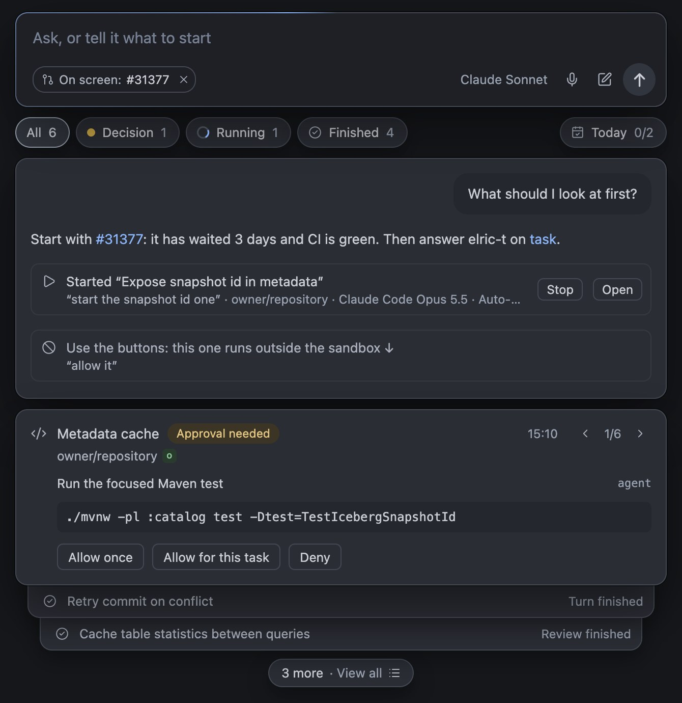

Use the Assistant
Your day and waiting tasks, in one conversation.

Open the Assistant
Bring your day and waiting tasks into one conversation. Turn on Enable Assistant in Settings → Agents → Features; each message uses your model allowance.
- Press ⌘J and ask what needs you, or about the item on screen.
- Browse Decision, Running, Finished, and Today cards. Answer approvals and questions right on them.
- Ask it to find work or open a page. Pull request cards can Approve, Merge, Comment, and, on your own PRs, Close.
- Ask for a new Epic issue. Nothing is created until you click Create issue.
- Start a new topic with New conversation or ⌘N. After 15 minutes away, ⌘J opens on a new one. Go back to an earlier one from the clock button to keep going.
⇧⌘J opens the task that has waited longest. Task alerts also show as macOS notifications.
Let it act when you ask
In Settings → Agents → Features, you can let the Assistant start tasks, answer tasks, change Epics and work items, or acknowledge and snooze items. Each switch is off by default.
Every action leaves a receipt with Open; Stop cancels the first turn of a task it started. The Assistant never edits files or runs code itself.